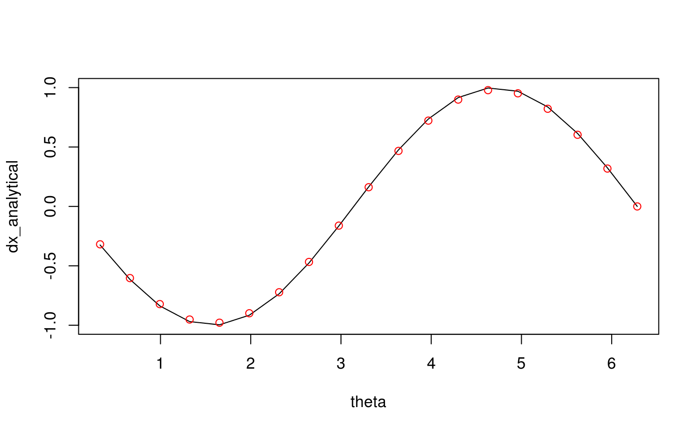
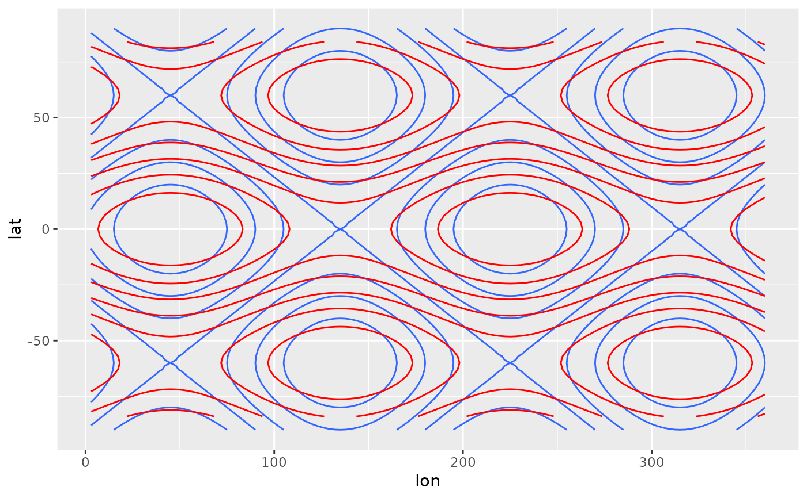

Derivate a discrete variable using finite differences
Derivate(
formula,
order = 1,
cyclical = FALSE,
fill = FALSE,
data = NULL,
sphere = FALSE,
a = 6371000,
equispaced = TRUE
)
Laplacian(
formula,
cyclical = FALSE,
fill = FALSE,
data = NULL,
sphere = FALSE,
a = 6371000,
equispaced = TRUE
)
Divergence(
formula,
cyclical = FALSE,
fill = FALSE,
data = NULL,
sphere = FALSE,
a = 6371000,
equispaced = TRUE
)
Vorticity(
formula,
cyclical = FALSE,
fill = FALSE,
data = NULL,
sphere = FALSE,
a = 6371000,
equispaced = TRUE
)Arguments
- formula
a formula indicating dependent and independent variables
- order
order of the derivative
- cyclical
logical vector of boundary condition for each independent variable
- fill
logical indicating whether to fill values at the boundaries with forward and backwards differencing
- data
optional data.frame containing the variables
- sphere
logical indicating whether to use spherical coordinates (see details)
- a
radius to use in spherical coordinates (defaults to Earth's radius)
- equispaced
logical indicating whether points are equispaced or not.
Value
If there is one independent variable and one dependent variable, a numeric vector of the same length as the dependent variable. If there are two or more independent variables or two or more dependent variables, a list containing the directional derivatives of each dependent variables.
Details
Each element of the return vector is an estimation of \(\frac{\partial^n x}{\partial y^{n}}\) by centred finite differences.
If sphere = TRUE, then the first two independent variables are
assumed to be longitude and latitude (in that order) in degrees. Then, a
correction is applied to the derivative so that they are in the same units as
a.
Using fill = TRUE will degrade the solution near the edges of a non-cyclical
boundary. Use with caution.
Laplacian(), Divergence() and Vorticity() are convenient wrappers that
call Derivate() and make the appropriate sums. For Divergence() and
Vorticity(), formula must be of the form vx + vy ~ x + y
(in that order).
See also
Other meteorology functions:
EOF(),
GeostrophicWind(),
WaveFlux(),
thermodynamics,
waves
Examples
data.table::setDTthreads(2)
theta <- seq(0, 360, length.out = 20)*pi/180
theta <- theta[-1]
x <- cos(theta)
dx_analytical <- -sin(theta)
dx_finitediff <- Derivate(x ~ theta, cyclical = TRUE)[[1]]
plot(theta, dx_analytical, type = "l")
points(theta, dx_finitediff, col = "red")

# Curvature (Laplacian)
# Note the different boundary conditions for each dimension
variable <- expand.grid(lon = seq(0, 360, by = 3)[-1],
lat = seq(-90, 90, by = 3))
variable$z <- with(variable, cos(lat*pi/180*3) + sin(lon*pi/180*2))
variable <- cbind(
variable,
as.data.frame(Derivate(z ~ lon + lat, data = variable,
cyclical = c(TRUE, FALSE), order = 2)))
library(ggplot2)
ggplot(variable, aes(lon, lat)) +
geom_contour(aes(z = z)) +
geom_contour(aes(z = z.ddlon + z.ddlat), color = "red")
#> Warning: Removed 480 rows containing non-finite outside the scale range
#> (`stat_contour()`).

# The same as
ggplot(variable, aes(lon, lat)) +
geom_contour(aes(z = z)) +
geom_contour(aes(z = Laplacian(z ~ lon + lat, cyclical = c(TRUE, FALSE))),
color = "red")
#> Warning: Removed 480 rows containing non-finite outside the scale range
#> (`stat_contour()`).